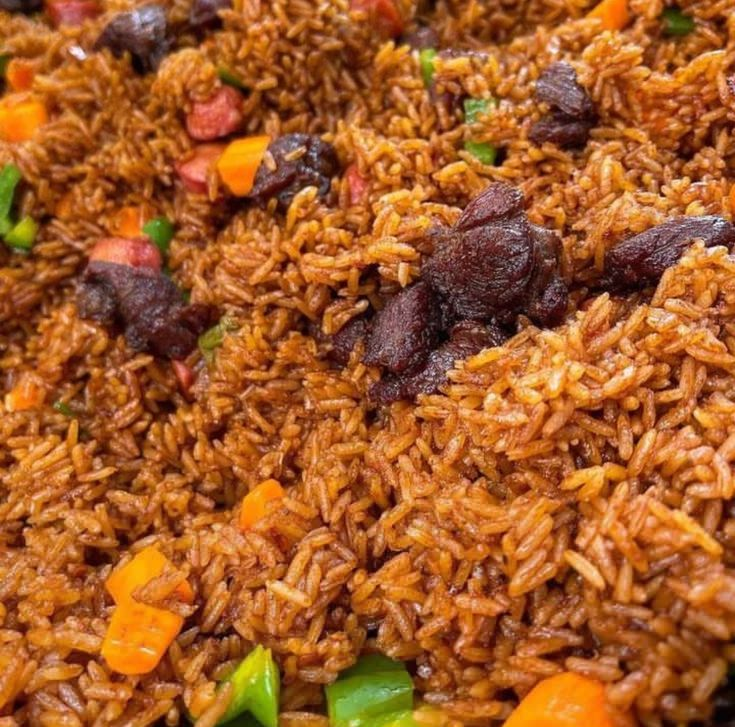

Jollof Rice

Description
Jollof rice is a popular West African dish made with rice, tomatoes, onions, and a blend of spices.
Known for its vibrant red color and rich flavor, it's a party favorite across the region.
Often served with fried plantains, chicken, or beef, jollof rice is a flavorful and satisfying meal that's both festive and comforting.
- Long grain parboiled rice
- Tomato paste
- Fresh tomatoes
- Red bell peppers
- Onions
- Garlic and ginger
- Vegetable or chicken stock
- Thyme and curry powder
- Salt and seasoning cubes
- Vegetable oil
Steps
- Blend tomatoes, peppers, onions, garlic, and ginger into a smooth paste.
- Heat oil in a pot, add chopped onions, and fry for a few minutes.
- Add tomato paste and fry for 5–7 minutes, then add the blended mixture.
- Cook the sauce until it reduces and the oil begins to separate.
- Add seasonings, curry, thyme, and stock. Stir well.
- Add washed rice and stir to coat evenly in the sauce.
- Cover the pot with foil and a lid; simmer on low heat until rice is cooked.
- Stir occasionally and adjust seasoning if needed. Serve hot.
Back to Home